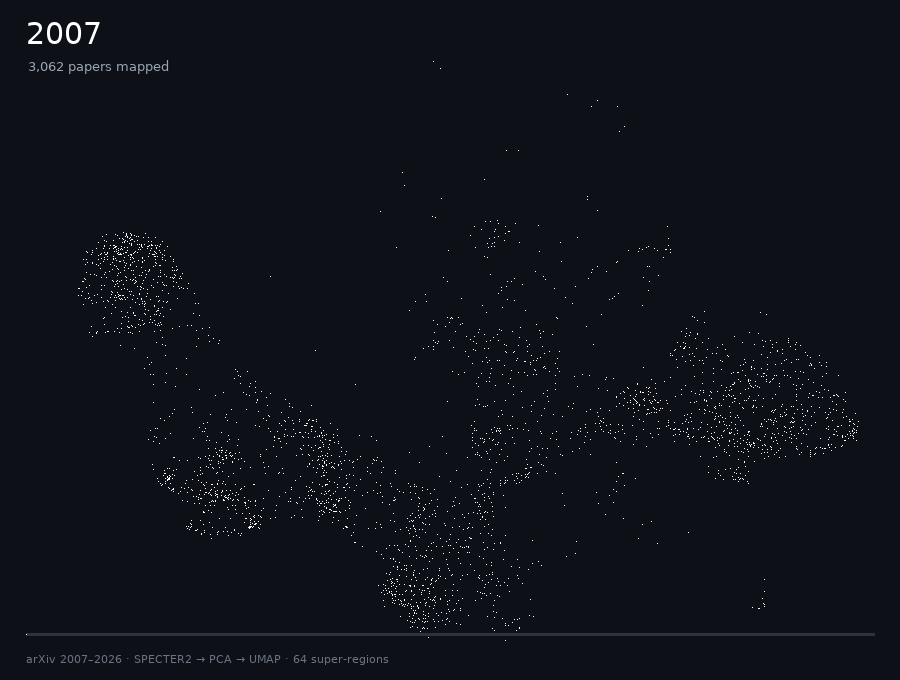
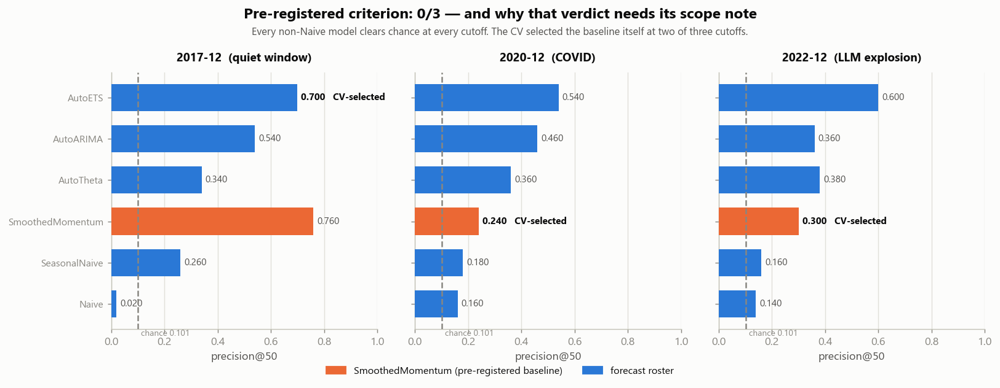
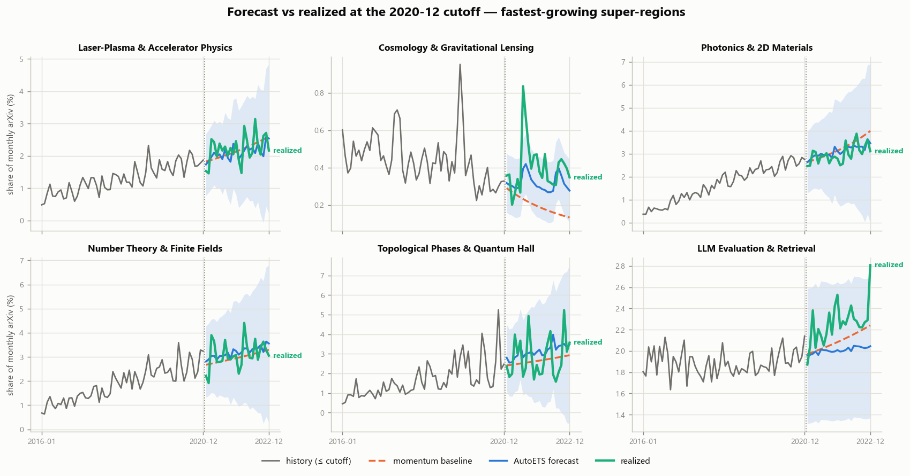

brontide (n.): the low rumble of thunder from a storm still beyond the horizon.
brontide maps 2.7 million arXiv papers into 1,024 research regions, forecasts each region's share of new work 24 months ahead, and grades itself with a test frozen before any data was touched. The test failed, and the project says why.

The cross-validated forecaster beat a momentum baseline on precision@50 at 0 of 3 cutoffs (2 needed). The sentence written before the data existed is reported verbatim.
A fixed AutoETS reached 0.613 precision@50 against a 0.101 chance rate; the selector scored 0.413. Hindsight per-cutoff choice would add only 0.020; the selector gave up 0.220.
The novelty stream adds rank skill beyond the forecast at 2 of 3 cutoffs, meeting its frozen bar. The 80% intervals do not: in band at 3 of 9 cells. They match the raw share but over-cover the smoothed series they were fitted on.


git clone https://github.com/numberingeometry/brontide && cd brontide
pip install -e .
python scripts/verify_results.py
negative criterion: 0/3 (need >=2) -> region-level emergence is momentum-dominated at 24m
OK: all 18 published rows reproduce exactly.
No corpus, no GPU, no network: every published number regenerates from committed artifacts, and the git history proves the thresholds were committed a day before the results. What the verdict does and does not license is in LIMITATIONS.md; prior art is in RELATED-WORK.md.